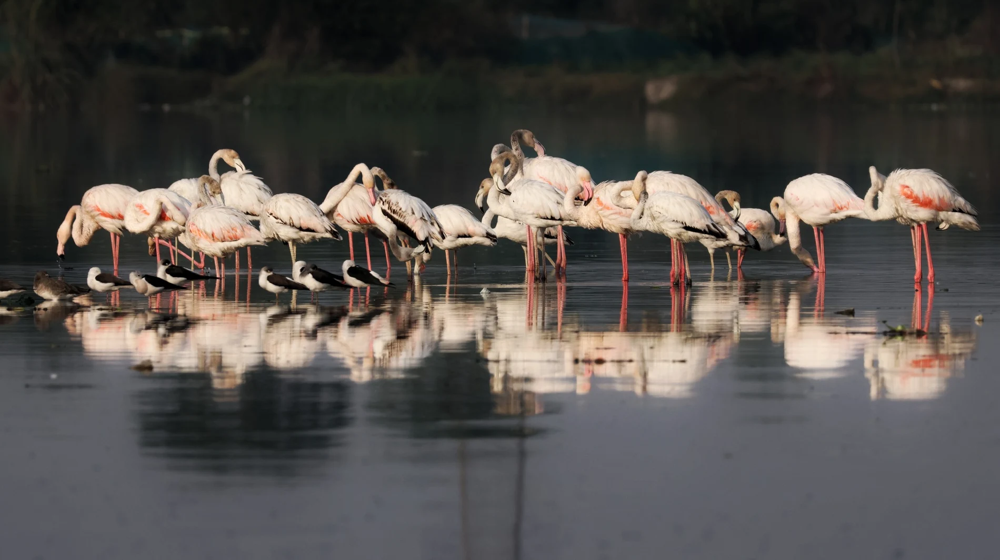
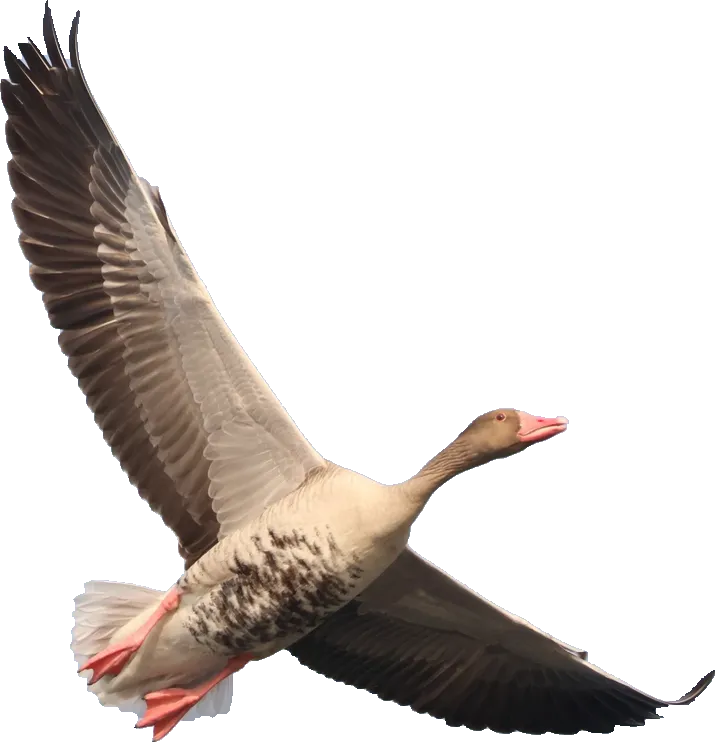
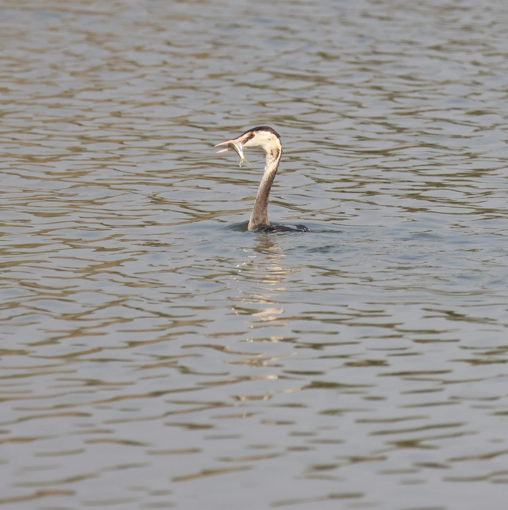
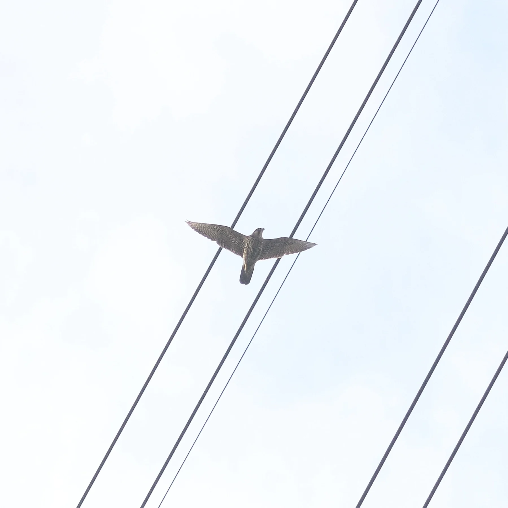
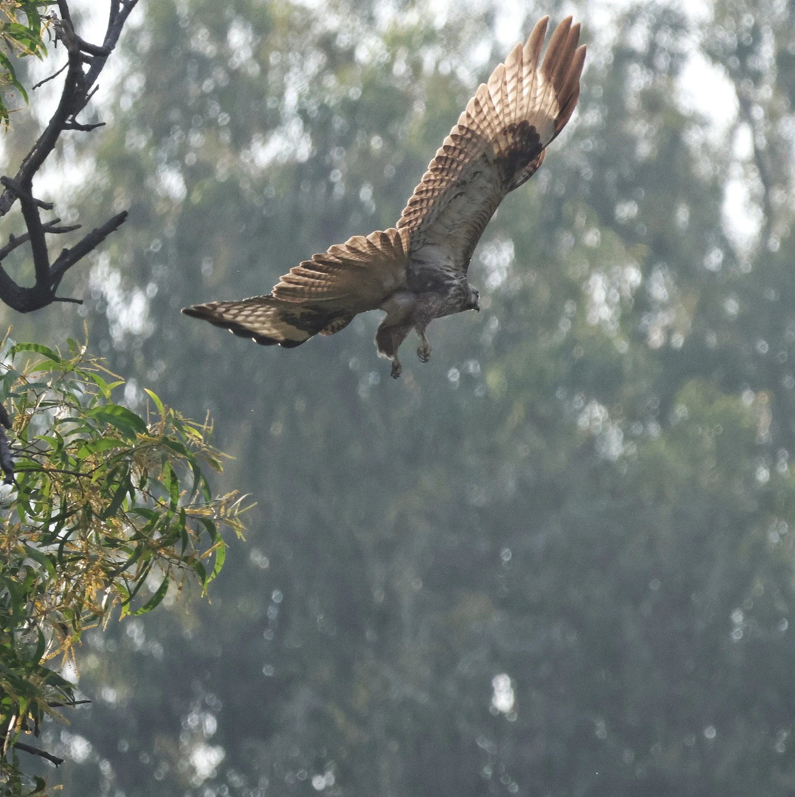
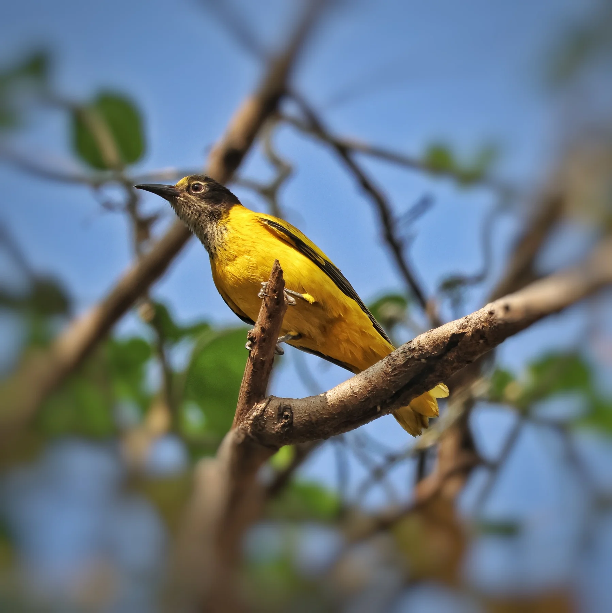
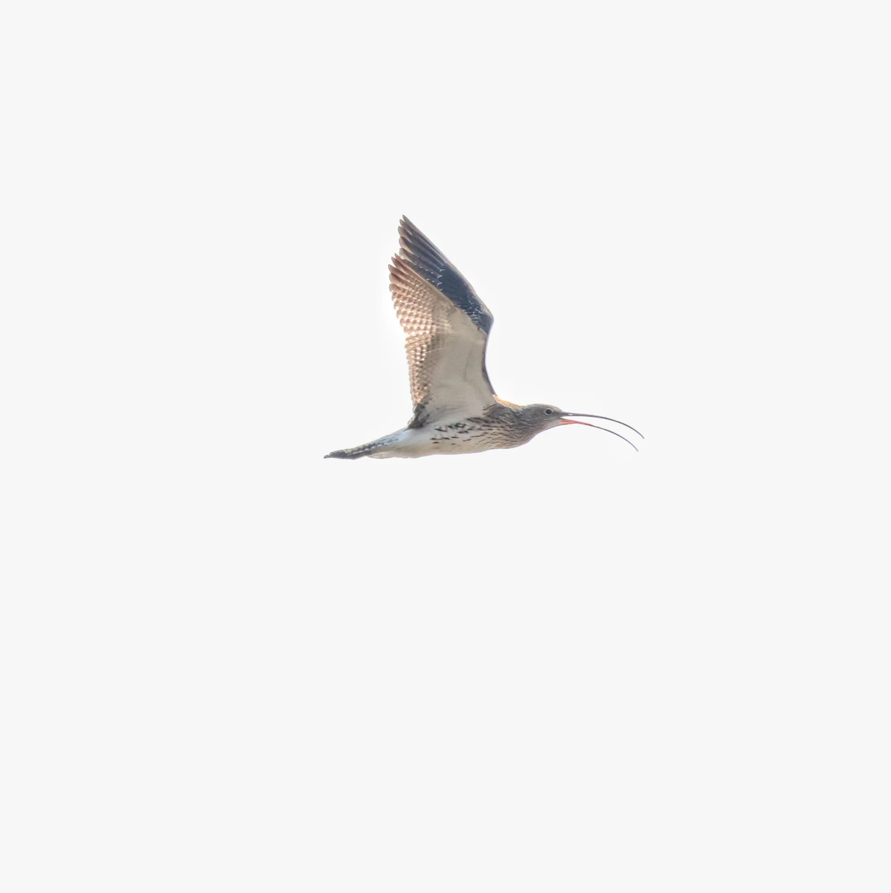
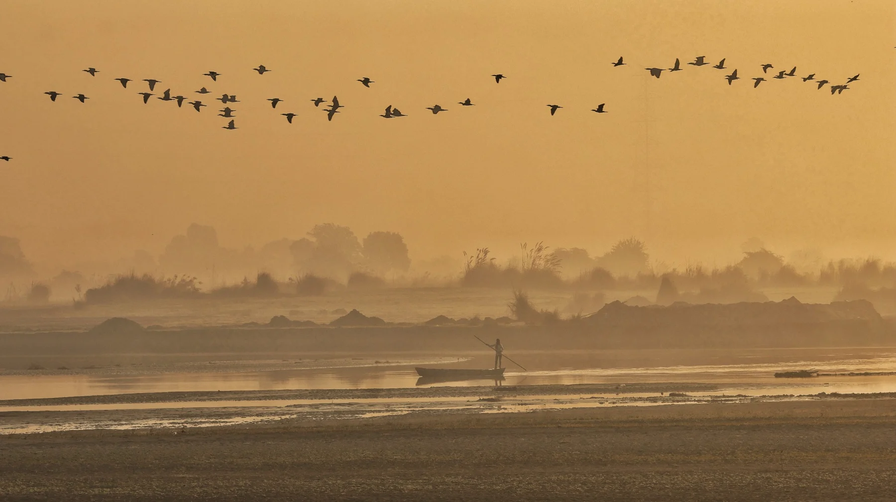

KASHIF YAMEENKASHIF YAMEEN
KASHIF YAMEENKASHIF YAMEEN
Discover a world hiding in plain sight.
Come birding with me ↗Join Kashif for a personalised encounter with nature.
Explore ↗ Red bird among reeds · Kashif Yameen
Red bird among reeds · Kashif Yameen
Flamingos on a wetland · Kashif YameenLearn to recognise birds by shape, habitat and sound.
Explore ↗ Goose in flight · Kashif Yameen
Goose in flight · Kashif Yameen Birds in motion over water · Kashif Yameen
Birds in motion over water · Kashif YameenTake time to observe and photograph wildlife responsibly.
Explore ↗ Raptor in flight with prey · Kashif Yameen
Raptor in flight with prey · Kashif YameenMove your pointer or touch the water to disturb its reflection.
Follow the movement of a bird across the landscape as you scroll.

Cool mornings, occasional fog and winter migrants. Bring warm layers and binoculars.
Explore seasonal guide ↗Illustrative seasonal conditions, not a live forecast. Sightings vary.
Explore Delhi NCR with curiosity, patience and respect for wildlife.
Plan your birding experience ↗ Urban gardens & heritage
Urban gardens & heritageGarden paths, historic monuments and common urban birds.
Half day · Explore ↗
Wetlands & seasonal migrantsWetland edges, waterbirds and open-country birding.
Half or full day · Explore ↗ Yamuna wetlands
Yamuna wetlandsExplore accessible wetland viewpoints and waterbird habitats.
Half day · Explore ↗ Open wetlands
Open wetlandsScan open water and fields for seasonal birds and cranes.
Half or full day · Explore ↗
Wetlands & photographyExplore wetland habitats and surrounding agricultural landscapes.
Half day · Explore ↗
Aravalli woodlandDiscover scrub, rocky landscapes and woodland birdlife.
Half day · Explore ↗ Woodland trails
Woodland trailsWalk forest paths and listen for woodland birds.
Half day · Explore ↗ Native habitats
Native habitatsExplore restored native vegetation and seasonal birdlife.
Half day · Explore ↗ Biodiversity & wetlands
Biodiversity & wetlandsDiscover restored ecosystems and their bird communities.
Half day · Explore ↗Move your pointer or touch each photograph to explore a different effect.




Discover the names, habitats and behaviour of six remarkable birds of the region. Sightings are never guaranteed.
Coracias benghalensis
Perches on wires and dives for insects; vivid blue wings in flight.
Alcedo atthis
Watches from a low perch before diving for small fish.
Terpsiphone paradisi
Catches insects in flight; adult males may have long tail streamers.
Phoenicopterus roseus
Filter-feeds in shallow water, often in groups.
Athene brama
Often rests in tree cavities; active around dusk and dawn.
Antigone antigone
Tall crane often seen in pairs, with resonant calls.